In vielen grafischen Oberflächen wird die Anordnung der Elemente
eines Dialogs durch Angabe absoluter Koordinaten vorgenommen
und so für jede Komponente manuell oder mit Hilfe eines Ressourcen-Editors
pixelgenau festgelegt, an welcher Stelle im Dialog sie zu erscheinen
hat.
Da Java-Programme auf vielen unterschiedlichen Plattformen mit unterschiedlichen
Ausgabegeräten laufen sollen, war eine solche Vorgehensweise
für die Designer des AWT nicht akzeptabel. Sie wählten stattdessen
den Umweg über einen Layoutmanager, der für die Anordnung
der Dialogelemente verantwortlich ist. Um einen Layoutmanager verwenden
zu können, wird dieser dem Fenster vor der Übergabe der
Dialogelemente mit der Methode setLayout
zugeordnet. Er ordnet dann die per add
übergebenen Elemente auf dem Fenster an.
Jeder Layoutmanager implementiert seine eigene Logik bezüglich
der optimalen Anordnung der Komponenten:
- Das FlowLayout
ordnet Dialogelemente nebeneinander in einer Zeile an. Wenn keine
weiteren Elemente in die Zeile passen, wird mit der nächsten
Zeile fortgefahren.
- Das GridLayout
ordnet die Dialogelemente in einem rechteckigen Gitter an, dessen
Zeilen- und Spaltenzahl beim Erstellen des Layoutmanagers angegeben
wird.
- Das BorderLayout
verteilt die Dialogelemente nach Vorgabe des Programms auf die vier
Randbereiche und den Mittelbereich des Fensters.
- Das CardLayout
ist in der Lage, mehrere Unterdialoge in einem Fenster unterzubringen
und jeweils einen davon auf Anforderung des Programms anzuzeigen.
- Das GridBagLayout
ist ein komplexer Layoutmanager, der die Fähigkeiten von GridLayout
erweitert und es ermöglicht, mit Hilfe von Bedingungsobjekten
sehr komplexe Layouts zu erzeugen.
Neben den gestalterischen Fähigkeiten eines Layoutmanagers bestimmt
in der Regel die Reihenfolge der Aufrufe der add-Methode
des Fensters die tatsächliche Anordnung der Komponenten auf dem
Bildschirm. Wenn nicht - wie es z.B. beim BorderLayout
möglich ist - zusätzliche Positionierungsinformationen an
das Fenster übergeben werden, ordnet der jeweilige Layoutmanager
die Komponenten in der Reihenfolge ihres Eintreffens an.
Um komplexere Layouts realisieren zu können, als die Layoutmanager
sie in ihren jeweiligen Grundausprägungen bieten, gibt es die
Möglichkeit, Layoutmanager zu schachteln. Auf diese Weise kann
auch ohne Vorgabe fester Koordinaten fast jede gewünschte Komponentenanordnung
realisiert werden. Sollte auch diese Variante nicht genau genug sein,
so bietet sich schließlich durch Verwendung eines Null-Layouts
die Möglichkeit an, Komponenten durch Vorgabe fester Koordinaten
zu platzieren.
31.2.1 FlowLayout
Die Klasse FlowLayout
stellt den einfachsten Layoutmanager dar. Alle Elemente werden so
lange nacheinander in einer Zeile angeordnet, bis kein Platz mehr
vorhanden ist und in der nächsten Zeile fortgefahren wird.
Das FlowLayout
wird einem Fenster durch folgende Anweisung zugeordnet:
setLayout(new FlowLayout());
Neben dem parameterlosen gibt es weitere Konstruktoren, die die Möglichkeit
bieten, die Anordnung der Elemente und ihre Abstände voneinander
vorzugeben:
public FlowLayout(int align)
public FlowLayout(int align, int hgap, int vgap)
|
java.awt.FlowLayout |
Der Parameter align gibt an,
ob die Elemente einer Zeile linksbündig, rechtsbündig oder
zentriert angeordnet werden. Hierzu stehen die Konstanten FlowLayout.CENTER,
FlowLayout.LEFT
und FlowLayout.RIGHT
zur Verfügung, als Voreinstellung wird FlowLayout.CENTER
verwendet. Mit hgap und vgap
können die horizontalen und vertikalen Abstände zwischen
den Komponenten vorgegeben werden. Die Voreinstellung ist 5.
Das folgende Listing zeigt die Verwendung der Klasse FlowLayout
am Beispiel von fünf Buttons, die in einem Grafikfenster angezeigt
werden. Anstelle der normalen zentrierten Anordnung werden die Elemente
linksbündig angeordnet und der Abstand zwischen den Buttons beträgt
20 Pixel:
001 /* Listing3102.java */
002
003 import java.awt.*;
004 import java.awt.event.*;
005
006 public class Listing3102
007 extends Frame
008 {
009 public static void main(String[] args)
010 {
011 Listing3102 wnd = new Listing3102();
012 wnd.setVisible(true);
013 }
014
015 public Listing3102()
016 {
017 super("Test FlowLayout");
018 addWindowListener(new WindowClosingAdapter(true));
019 //Layout setzen und Komponenten hinzufügen
020 setLayout(new FlowLayout(FlowLayout.LEFT,20,20));
021 add(new Button("Button 1"));
022 add(new Button("Button 2"));
023 add(new Button("Button 3"));
024 add(new Button("Button 4"));
025 add(new Button("Button 5"));
026 pack();
027 }
028 }
|
Listing3102.java |
Listing 31.2: Die Klasse FlowLayout
Das Programm erzeugt folgendes Fenster:
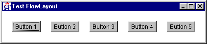
Abbildung 31.2: Verwendung der Klasse FlowLayout
31.2.2 GridLayout
Ein GridLayout
bietet eine größere Kontrolle über die Anordnung der
Elemente als ein FlowLayout.
Hier werden die Komponenten nicht einfach nacheinander auf dem Bildschirm
positioniert, sondern innerhalb eines rechteckigen Gitters angeordnet,
dessen Elemente eine feste Größe haben.
Das Programm übergibt dazu beim Aufruf des Konstruktors zwei
Parameter, rows und columns,
mit denen die vertikale und die horizontale Anzahl an Elementen festgelegt
werden:
Beim Aufruf von add
werden die Komponenten dann nacheinander in die einzelnen Zellen der
Gittermatrix gelegt. Analog zum FlowLayout
wird dabei zunächst die erste Zeile von links nach rechts gefüllt,
dann die zweite usw.
Ähnlich wie beim FlowLayout
steht ein zusätzlicher Konstruktor zur Verfügung, der es
erlaubt, die Größe der horizontalen und vertikalen Lücken
zu verändern:
Die größere Kontrolle des Programms über das Layout
besteht nun darin, dass der Umbruch in die nächste Zeile genau
vorhergesagt werden kann. Anders als beim FlowLayout
erfolgt dieser nicht erst dann, wenn keine weiteren Elemente in die
Zeile passen, sondern wenn dort so viele Elemente platziert wurden,
wie das Programm vorgegeben hat.
Das folgende Beispiel zeigt ein Fenster mit einem Gitter der Größe
4*2 Elemente, das ingesamt sieben Buttons anzeigt:
001 /* Listing3103.java */
002
003 import java.awt.*;
004 import java.awt.event.*;
005
006 public class Listing3103
007 extends Frame
008 {
009 public static void main(String[] args)
010 {
011 Listing3103 wnd = new Listing3103();
012 wnd.setVisible(true);
013 }
014
015 public Listing3103()
016 {
017 super("Test GridLayout");
018 addWindowListener(new WindowClosingAdapter(true));
019 //Layout setzen und Komponenten hinzufügen
020 setLayout(new GridLayout(4,2));
021 add(new Button("Button 1"));
022 add(new Button("Button 2"));
023 add(new Button("Button 3"));
024 add(new Button("Button 4"));
025 add(new Button("Button 5"));
026 add(new Button("Button 6"));
027 add(new Button("Button 7"));
028 pack();
029 }
030 }
|
Listing3103.java |
Listing 31.3: Die Klasse GridLayout
Die Ausgabe des Programms ist:
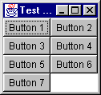
Abbildung 31.3: Verwendung der Klasse GridLayout
Die Größe der Komponenten
Wenn wir die Größe des Fensters nicht durch einen Aufruf
von pack,
sondern manuell festgelegt hätten, wäre an dieser Stelle
ein wichtiger Unterschied zwischen den beiden bisher vorgestellten
Layoutmanagern deutlich geworden. Abbildung 31.4
zeigt das veränderte Listing 31.2,
bei dem die Größe des Fensters durch Aufruf von setSize(500,200);
auf 500*200 Pixel festgelegt und der Aufruf von pack
entfernt wurde:
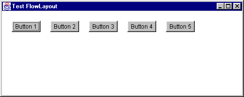
Abbildung 31.4: Das FlowLayout in einem größeren Fenster
Hier verhält sich das Programm noch so, wie wir es erwarten würden,
denn die Buttons haben ihre Größe behalten, während
das Fenster größer geworden ist. Anders sieht es dagegen
aus, wenn wir die Fenstergröße in Listing 31.3
ebenfalls auf 500*200 Pixel fixieren:
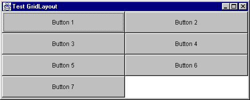
Abbildung 31.5: Das GridLayout in einem größeren Fenster
Nun werden die Buttons plötzlich sehr viel größer
als ursprünglich angezeigt, obwohl sie eigentlich weniger Platz
in Anspruch nehmen würden. Der Unterschied besteht darin, dass
ein FlowLayout
die gewünschte Größe eines Dialogelements verwendet,
um seine Ausmaße zu bestimmen. Das GridLayout
dagegen ignoriert die gewünschte Größe und dimensioniert
die Dialogelemente fest in der Größe eines Gitterelements.
Ein LayoutManager hat also offensichtlich
die Freiheit zu entscheiden, ob und in welcher Weise er die Größen
von Fenster und Dialogelementen den aktuellen Erfordernissen anpasst.
31.2.3 BorderLayout
Das BorderLayout
verfolgt einen anderen Ansatz als die beiden vorigen Layoutmanager,
denn die Positionierung der Komponenten wird nicht mehr primär
durch die Reihenfolge der Aufrufe von add
bestimmt. Stattdessen teilt das BorderLayout
den Bildschirm in fünf Bereiche auf, und zwar in die vier Ränder
und das Zentrum. Durch Angabe einer Himmelsrichtung
wird beim Aufruf von add
angegeben, auf welchem dieser Bereiche die Komponente platziert werden
soll. BorderLayout
stellt dazu folgende Konstanten zur Verfügung:
Zur Übergabe dieses Parameters gibt es die Methode add
der Klasse Container
in einer Variante mit einem Object
als zweiten Parameter:
Das folgende Beispiel zeigt die Anordnung von fünf Buttons in
einem BorderLayout.
Jeweils einer der Buttons wird auf die vier Randbereiche verteilt
und der fünfte Button steht in der Mitte. Die Größe
des Fensters wird fest auf 300*200 Pixel eingestellt:
001 /* Listing3104.java */
002
003 import java.awt.*;
004 import java.awt.event.*;
005
006 public class Listing3104
007 extends Frame
008 {
009 public static void main(String[] args)
010 {
011 Listing3104 wnd = new Listing3104();
012 wnd.setVisible(true);
013 }
014
015 public Listing3104()
016 {
017 super("Test BorderLayout");
018 addWindowListener(new WindowClosingAdapter(true));
019 //Layout setzen und Komponenten hinzufügen
020 setSize(300,200);
021 setLayout(new BorderLayout());
022 add(new Button("Button 1"), BorderLayout.NORTH);
023 add(new Button("Button 2"), BorderLayout.SOUTH);
024 add(new Button("Button 3"), BorderLayout.WEST);
025 add(new Button("Button 4"), BorderLayout.EAST);
026 add(new Button("Button 5"), BorderLayout.CENTER);
027 }
028 }
|
Listing3104.java |
Listing 31.4: Das BorderLayout
Die Ausgabe des Programms ist:
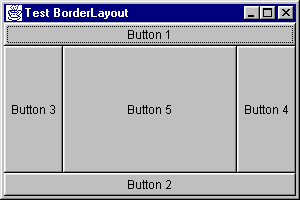
Abbildung 31.6: Verwendung der Klasse BorderLayout
Bezüglich der Skalierung der Komponenten verfolgt BorderLayout
einen Mittelweg zwischen FlowLayout
und GridLayout.
Während FlowLayout
die Komponenten immer in ihrer gewünschten Größe belässt
und GridLayout
sie immer skaliert, ist dies bei BorderLayout
von verschiedenen Faktoren abhängig:
- Nord- und Südelement behalten ihre gewünschte Höhe,
werden aber auf die volle Fensterbreite skaliert.
- Ost- und Westelement behalten ihre gewünschte Breite, werden
aber in der Höhe so skaliert, dass sie genau zwischen Nord- und
Südelement passen.
- Das Mittelelement wird in der Höhe und Breite so angepasst,
dass es den verbleibenden freien Raum einnimmt.
Auch beim BorderLayout
kann die Größe der Lücken zwischen den Elementen an
den Konstruktor übergeben werden:
Wenn das vorige Beispiel ein BorderLayout
mit einer vertikalen und horizontalen Lücke von 10 Pixeln definieren
würde, wäre die Ausgabe des Programms wie folgt:
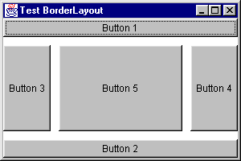
Abbildung 31.7: Ein BorderLayout mit Lücken
31.2.4 GridBagLayout
Das GridBagLayout
ist der aufwändigste Layoutmanager in Java. Er erlaubt eine sehr
flexible Gestaltung der Oberfläche und bietet viele Möglichkeiten,
die in den anderen Layoutmanagern nicht zu finden sind. Der Preis
dafür ist eine etwas kompliziertere Bedienung und ein höherer
Einarbeitungsaufwand. Wir wollen in diesem Abschnitt die Klasse GridBagLayout
vorstellen und ihre grundlegenden Anwendungsmöglichkeiten besprechen.
Um mit einem GridBagLayout
zu arbeiten, ist wie folgt vorzugehen:
- Zunächst ist ein Objekt des Typs GridBagLayout
zu instanzieren und durch Aufruf von setLayout
dem Fenster zuzuweisen.
- Für jedes einzufügende Dialogelement ist nun ein Objekt
des Typs GridBagConstraints
anzulegen, um über dessen Membervariablen die spezifischen Layouteigenschaften
des Dialogelements zu beschreiben.
- Sowohl das Dialogelement als auch das Eigenschaftenobjekt werden
durch Aufruf der Methode setConstraints
an den Layoutmanager übergeben.
- Schließlich wird das Dialogelement mit add
an das Fenster übergeben.
Das könnte beispielsweise so aussehen
001 ...
002 GridBagLayout gbl = new GridBagLayout();
003 GridBagConstraints gbc = new GridBagConstraints();
004 setLayout(gbl);
005 List list = new List();
006 gbc.gridx = 0;
007 gbc.gridy = 0;
008 gbc.gridwidth = 1;
009 gbc.gridheight = 1;
010 gbc.weightx = 100;
011 gbc.weighty = 100;
012 gbc.fill = GridBagConstraints.BOTH;
013 gbl.setConstraints(list, gbc);
014 add(list);
015 ...
|
Listing 31.5: Umgang mit GridBagLayout und GridBagConstraints
Ein GridBagLayout
unterteilt das Fenster ähnlich wie das GridLayout
in ein rechteckiges Gitter von Zellen, in denen die Dialogelemente
platziert werden. Im Gegensatz zum GridLayout
können die Zellen allerdings unterschiedliche Größen
haben und die Dialogelemente können auf verschiedene Weise innerhalb
der Zellen platziert werden. Zudem kann ein Dialogelement sich in
beiden Richtungen über mehr als eine einzige Zelle erstrecken.
Das Geheimnis der korrekten Verwendung eines GridBagLayout
liegt also in der richtigen Konfiguration der Membervariablen der
GridBagConstraints-Objekte:
public int gridx
public int gridy
public int gridwidth
public int gridheight
public int anchor
public int fill
public double weightx
public double weighty
public Insets insets
public int ipadx
public int ipady
|
java.awt.GridBagConstraints |
Die Anzahl der Zellen in x- und y-Richtung wird dabei dynamisch ermittelt,
abhängig von den Constraints-Vorgaben. Die Parameter bedeuten:
- gridx
gibt an, in welcher Spalte des logischen Gitters der linke Rand des
Dialogelements liegen soll. Die erste Spalte hat den Wert 0. gridy
gibt analog die logische Zeile des oberen Rands des Dialogelements
an. Beide Werte werden nicht etwa in Pixeln angegeben, sondern bezeichnen
die Zellen des logischen Gitternetzes. (0, 0) ist die linke obere
Ecke.
- Die Parameter gridwidth
und gridheight
geben die horizontale und vertikale Ausdehnung des Dialogelements
an. Soll ein Dialogelement beispielsweise zwei Zellen breit sein,
so ist für gridwidth
der Wert 2 anzugeben.
- Mit dem Parameter fill
wird definiert, wie sich die Abmessungen des Dialogelements verändern,
wenn die Größe des Fensters verändert wird. Wird hier
GridBagConstraints.NONE
angegeben, bleibt das Element immer in seiner ursprünglichen
Größe. Wird einer der Werte GridBagConstraints.HORIZONTAL,
GridBagConstraints.VERTICAL
oder GridBagConstraints.BOTH
angegeben, skaliert der Layoutmanager das Dialogelement automatisch
in horizontaler, vertikaler oder in beiden Richtungen.
- Der Parameter anchor
bestimmt, an welcher Kante der Zelle das Dialogelement festgemacht
wird, wenn nach dem Skalieren noch Platz in der Zelle verbleibt. Hier
können die folgenden Konstanten angegeben werden:
- Die Parameter weightx
und weighty
sind etwas trickreich. Sie bestimmen das Verhältnis, in dem überschüssiger
Platz auf die Zellen einer Zeile bzw. einer Spalte verteilt wird.
Ist der Wert 0, bekommt die Zelle nichts von eventuell überschüssigem
Platz ab. Bedeutsam ist dabei nur das relative Verhältnis, der
absolute Wert dieses Parameters spielt keine Rolle. Die Werte sollten
allerdings nicht negativ sein.
- Mit dem Parameter insets
kann ein Rand gesetzt werden. Er wird um das Dialogelement herum auf
jeden Fall freigelassen.
- Mit ipadx
und ipady
kann ein konstanter Wert zur minimalen Breite und Höhe der Komponente
hinzugefügt werden.
Um die Anwendung der Parameter zu veranschaulichen, wollen wir uns
ein Beispiel ansehen. Das zu erstellende Programm soll ein Fenster
mit sechs Dialogelementen entsprechend Abbildung 31.8
aufbauen. Die Liste auf der linken Seite soll beim Skalieren in beide
Richtungen vergrößert werden. Die Textfelder sollen dagegen
lediglich in der Breite wachsen, ihre ursprüngliche Höhe
aber beibehalten. Bei vertikaler Vergrößerung des Fensters
sollen sie untereinander stehen bleiben. Die Beschriftungen sollen
ihre anfängliche Größe beibehalten und - unabhängig
von der Fenstergröße - direkt vor den Textfeldern stehen
bleiben. Auch der Button soll seine ursprüngliche Größe
beibehalten, wenn das Fenster skaliert wird. Zudem soll er immer in
der rechten unteren Ecke stehen. Zwischen den Dialogelementen soll
ein Standardabstand von zwei Pixeln eingehalten werden.
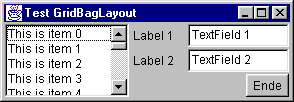
Abbildung 31.8: Beispiel für GridBagLayout
Wir konstruieren das GridBagLayout
als Zelle der Größe drei mal drei gemäß Abbildung 31.9:
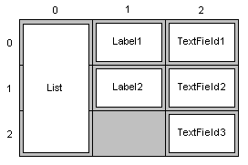
Abbildung 31.9: Zellenschema für GridBagLayout-Beispiel
Die Listbox beginnt also in Zelle (0, 0) und erstreckt sich über
eine Zelle in horizontaler und drei Zellen in vertikaler Richtung.
Die beiden Labels liegen in Spalte 1 und den Zeilen 0 bzw. 1. Die
Textfelder liegen eine Spalte rechts daneben. Textfelder und Beschriftungen
sind genau eine Zelle breit und eine Zelle hoch. Der Button liegt
in Zelle (2, 2). Die übrigen Eigenschaften werden entsprechend
unserer Beschreibung so zugewiesen, dass die vorgegebenen Anforderungen
erfüllt werden:
001 /* Listing3106.java */
002
003 import java.awt.*;
004 import java.awt.event.*;
005
006 public class Listing3106
007 extends Frame
008 {
009 public static void main(String[] args)
010 {
011 Listing3106 wnd = new Listing3106();
012 wnd.setVisible(true);
013 }
014
015 public Listing3106()
016 {
017 super("Test GridBagLayout");
018 setBackground(Color.lightGray);
019 addWindowListener(new WindowClosingAdapter(true));
020 //Layout setzen und Komponenten hinzufügen
021 GridBagLayout gbl = new GridBagLayout();
022 GridBagConstraints gbc;
023 setLayout(gbl);
024
025 //List hinzufügen
026 List list = new List();
027 for (int i = 0; i < 20; ++i) {
028 list.add("This is item " + i);
029 }
030 gbc = makegbc(0, 0, 1, 3);
031 gbc.weightx = 100;
032 gbc.weighty = 100;
033 gbc.fill = GridBagConstraints.BOTH;
034 gbl.setConstraints(list, gbc);
035 add(list);
036 //Zwei Labels und zwei Textfelder
037 for (int i = 0; i < 2; ++i) {
038 //Label
039 gbc = makegbc(1, i, 1, 1);
040 gbc.fill = GridBagConstraints.NONE;
041 Label label = new Label("Label " + (i + 1));
042 gbl.setConstraints(label, gbc);
043 add(label);
044 //Textfeld
045 gbc = makegbc(2, i, 1, 1);
046 gbc.weightx = 100;
047 gbc.fill = GridBagConstraints.HORIZONTAL;
048 TextField field = new TextField("TextField " + (i +1));
049 gbl.setConstraints(field, gbc);
050 add(field);
051 }
052 //Ende-Button
053 Button button = new Button("Ende");
054 gbc = makegbc(2, 2, 0, 0);
055 gbc.fill = GridBagConstraints.NONE;
056 gbc.anchor = GridBagConstraints.SOUTHEAST;
057 gbl.setConstraints(button, gbc);
058 add(button);
059 //Dialogelemente layouten
060 pack();
061 }
062
063 private GridBagConstraints makegbc(
064 int x, int y, int width, int height)
065 {
066 GridBagConstraints gbc = new GridBagConstraints();
067 gbc.gridx = x;
068 gbc.gridy = y;
069 gbc.gridwidth = width;
070 gbc.gridheight = height;
071 gbc.insets = new Insets(1, 1, 1, 1);
072 return gbc;
073 }
074 }
|
Listing3106.java |
Listing 31.6: Beispiel für GridBagLayout
Das Programm besitzt eine kleine Hilfsmethode makegbc,
mit der auf einfache Weise ein neues GridBagConstraints-Objekt
für einen vorgegebenen Bereich von Zellen erzeugt werden kann.
Die übrigen Membervariablen werden im Konstruktor der Fensterklasse
zugewiesen. Abbildung 31.10
zeigt das Fenster nach dem Skalieren in x- und y-Richtung.
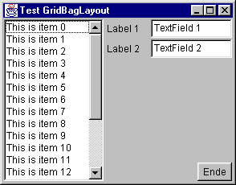
Abbildung 31.10: Das GridBagLayout-Beispiel nach dem Skalieren
31.2.5 NULL-Layout
Ein Null-Layout wird erzeugt, indem
die Methode setLayout
mit dem Argument null
aufgerufen wird. In diesem Fall verwendet das Fenster keinen Layoutmanager,
sondern überlässt die Positionierung der Komponenten der
Anwendung. Für jedes einzufügende Dialogelement sind dann
drei Schritte auszuführen:
- Das Dialogelement wird erzeugt.
- Seine Größe und Position werden festgelegt.
- Das Dialogelement wird an das Fenster übergeben.
Der erste und letzte Schritt unterscheiden sich nicht von unseren
bisherigen Versuchen, bei denen wir vordefinierte Layoutmanager verwendet
haben. Im zweiten Schritt ist allerdings etwas Handarbeit notwendig.
Größe und Position des Dialogelements können mit den
Methoden move und setSize
oder - noch einfacher - mit setBounds
festgelegt werden:
Der Punkt (x,y)
bestimmt die neue Anfangsposition des Dialogelements und (width,
height) seine Größe.
Das folgende Listing demonstriert diese Vorgehensweise am Beispiel
einer treppenartigen Anordnung von fünf Buttons:
001 /* Listing3107.java */
002
003 import java.awt.*;
004 import java.awt.event.*;
005
006 public class Listing3107
007 extends Frame
008 {
009 public static void main(String[] args)
010 {
011 Listing3107 wnd = new Listing3107();
012 wnd.setVisible(true);
013 }
014
015 public Listing3107()
016 {
017 super("Dialogelemente ohne Layoutmanager");
018 addWindowListener(new WindowClosingAdapter(true));
019 //Layout setzen und Komponenten hinzufügen
020 setSize(300,250);
021 setLayout(null);
022 for (int i = 0; i < 5; ++i) {
023 Button button = new Button("Button"+(i+1));
024 button.setBounds(10+i*35,40+i*35,100,30);
025 add(button);
026 }
027 }
028 }
|
Listing3107.java |
Listing 31.7: Anordnen von Dialogelementen ohne Layoutmanager
Die Ausgabe des Programms ist:
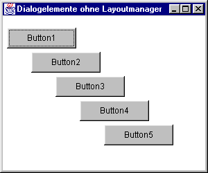
Abbildung 31.11: Verwendung des Null-Layouts
31.2.6 Schachteln von Layoutmanagern
Eines der Schlüsselkonzepte zur Realisierung komplexer, portabler
Dialoge ist die Fähigkeit, Layoutmanager schachteln zu können.
Dazu wird an der Stelle, die ein Sublayout erhalten soll, einfach
ein Objekt der Klasse Panel
eingefügt, das einen eigenen Layoutmanager erhält. Dieses
Panel
kann mit Dialogelementen bestückt werden, die entsprechend dem
zugeordneten Unterlayout formatiert werden.
Wenn wir an die in Abbildung 27.1
vorgestellte Klassenhierarchie innerhalb des AWT denken, werden wir
uns daran erinnern, dass ein Panel
die einfachste konkrete Containerklasse ist. Sie erbt alle Eigenschaften
von Container
und bietet damit die Möglichkeit, Komponenten aufzunehmen und
mit Hilfe eines Layoutmanagers auf dem Bildschirm anzuordnen.
Das folgende Beispiel zeigt einen Dialog, der ein GridLayout
der Größe 1*2 Elemente verwendet. Innerhalb des ersten
Elements wird ein Panel
mit einem GridLayout
der Größe 3*1 Elemente verwendet, innerhalb des zweiten
Elements ein BorderLayout:
001 /* Listing3108.java */
002
003 import java.awt.*;
004 import java.awt.event.*;
005
006 public class Listing3108
007 extends Frame
008 {
009 public static void main(String[] args)
010 {
011 Listing3108 wnd = new Listing3108();
012 wnd.setVisible(true);
013 }
014
015 public Listing3108()
016 {
017 super("Geschachtelte Layoutmanager");
018 addWindowListener(new WindowClosingAdapter(true));
019 //Layout setzen und Komponenten hinzufügen
020 //Panel 1
021 Panel panel1 = new Panel();
022 panel1.setLayout(new GridLayout(3,1));
023 panel1.add(new Button("Button1"));
024 panel1.add(new Button("Button2"));
025 panel1.add(new Button("Button3"));
026 //Panel 2
027 Panel panel2 = new Panel();
028 panel2.setLayout(new BorderLayout());
029 panel2.add(new Button("Button4"), BorderLayout.NORTH);
030 panel2.add(new Button("Button5"), BorderLayout.SOUTH);
031 panel2.add(new Button("Button6"), BorderLayout.WEST);
032 panel2.add(new Button("Button7"), BorderLayout.EAST);
033 panel2.add(new Button("Button8"), BorderLayout.CENTER);
034 //Hauptfenster
035 setLayout(new GridLayout(1,2));
036 add(panel1);
037 add(panel2);
038 pack();
039 }
040 }
|
Listing3108.java |
Listing 31.8: Schachteln von Layoutmanagern
Die Ausgabe des Programms ist:
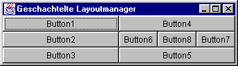
Abbildung 31.12: Verwendung eines geschachtelten Layouts
Das folgende Beispiel demonstriert beide Anwendungen anhand eines
BorderLayouts, das im South-Element
zwei rechtsbündig angeordnete Buttons in Originalgröße
und im Center-Element sechs innerhalb eines GridLayouts
der Größe 3*2 Elemente angeordnete, skalierte Buttons enthält:
001 /* Listing3109.java */
002
003 import java.awt.*;
004 import java.awt.event.*;
005
006 public class Listing3109
007 extends Frame
008 {
009 public static void main(String[] args)
010 {
011 Listing3109 wnd = new Listing3109();
012 wnd.setVisible(true);
013 }
014
015 public Listing3109()
016 {
017 super("Geschachtelte Layoutmanager, Teil II");
018 addWindowListener(new WindowClosingAdapter(true));
019 //Layout setzen und Komponenten hinzufügen
020 setSize(300,200);
021 //Panel 1
022 Panel panel1 = new Panel();
023 panel1.setLayout(new GridLayout(3,2));
024 panel1.add(new Button("Button1"));
025 panel1.add(new Button("Button2"));
026 panel1.add(new Button("Button3"));
027 panel1.add(new Button("Button4"));
028 panel1.add(new Button("Button5"));
029 panel1.add(new Button("Button6"));
030 //Panel 2
031 Panel panel2 = new Panel();
032 panel2.setLayout(new FlowLayout(FlowLayout.RIGHT));
033 panel2.add(new Button("Abbruch"));
034 panel2.add(new Button("OK"));
035 //Hauptfenster
036 setLayout(new BorderLayout());
037 add(panel1, BorderLayout.CENTER);
038 add(panel2, BorderLayout.SOUTH);
039 }
040 }
|
Listing3109.java |
Listing 31.9: Eine weitere Anwendung für geschachtelte Layoutmanager
Die Ausgabe des Programms ist:
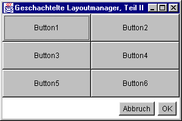
Abbildung 31.13: Ein weiteres Beispiel für geschachtelte Layouts